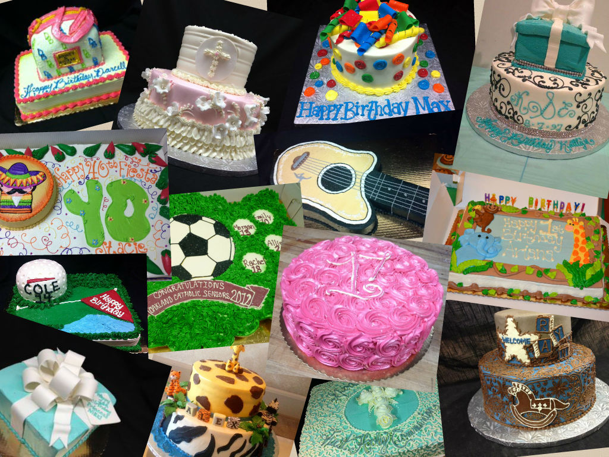
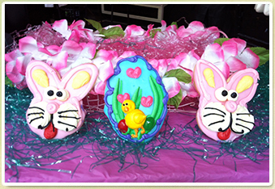

About Us
Prantl’s Bakery is a Pittsburgh institution. Its "Burnt Almond Torte" and 100+ sinful sweets have been a tradition for the last 40 years. In fact, there’s been a bakery in continuous operation at the flagship Shadyside store for over 100 years. Prantl’s is a bakery in the German tradition, with old-fashioned fruit Danish and nut-filled coffeecakes, but we can’t help but get excited about some of our "new favorites" as well, like key lime pie and our buttery croissants. In addition to our mouth watering special order cakes, we are famous for our "Burnt Almond Torte", which was conceived by Henry Prantl after a trip to California. There was an almond glut the year he went and the Almond Board was trying to get bakers to use almonds in new and inspiring ways. Henry picked up a few ideas and brought them back to Pittsburgh where he refined them into our current recipe for "Burnt Almond Torte", a unique and addictive dessert. Henry and Jane Prantl retired from the business in 2007. The bakery is now owned and operated by John M. Felice, who strives to maintain the tradition of high quality baked goods.
"No cake made in any of the five boroughs of New York holds a candle to Prantl’s amazing burnt almond torte. It is possibly the BEST cake America has to offer." - Huffington Post, 2014
Events
Mouse over each event for a description of our offerings.
-
Weddings

-
Celebrations
 -
Holidays
